AWS 네트워크 구성 패턴 가이드
개요
AWS 네트워크 구성 시 참고하기 좋은 여러가지 패턴들을 모아놓은 가이드 문서입니다.
네트워크 구성 사례
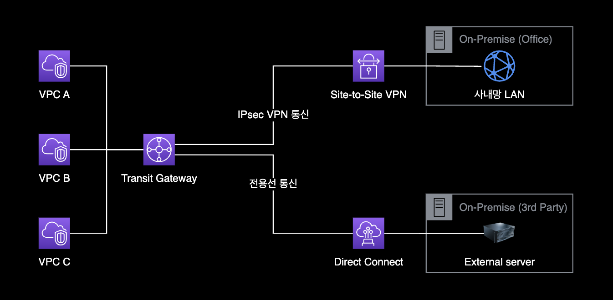
Transit Gateway는 VPN 및 Direct Connect 전용선을 모두 사용할 수 있습니다. Transit Gateway를 사용하면 VPC, 온프레미스 데이터 센터, 다른 AWS 계정에서 호스팅되는 VPC 등과 같은 여러 곳에서 사용할 수 있는 중앙 집중식 가상 프라이빗 네트워크를 구성할 수 있습니다. VPN을 사용하여 인터넷을 통해 안전하게 연결할 수 있고, 전용선을 사용하여 보다 안전하고 빠른 연결을 설정할 수 있습니다. 이를 통해 효율적이고 심플한 네트워크 구성을 유지할 수 있습니다.
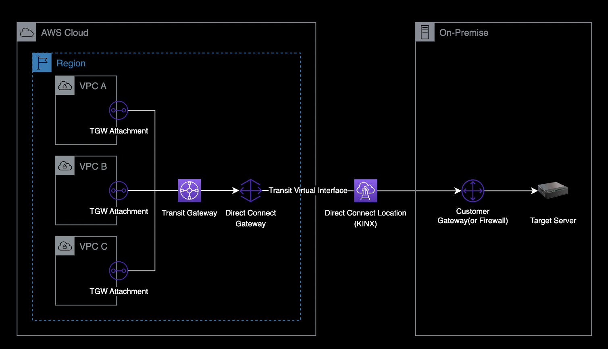
Direct Connect (DX)
AWS Direct Connect는 회사 내부 네트워크 혹은 기존 데이터 센터 환경의 온프레미스 장비와 AWS 클라우드 네트워크를 전용 회선으로 연결하여, 하이브리드 클라우드 환경을 구축할 수 있는 네트워크 서비스입니다.
전용 회선의 장점인 높은 보안성 및 일관된 네트워크 대역폭을 제공하고, AWS 서비스의 트래픽 비용 (Data transfer Out)을 절감시킬 수 있는 장점이 있습니다.
- 여러 개의 VPC 관리를 위해 기존에 Transit Gateway를 쓰는 인프라 환경의 경우, Direct Connect Gateway를 통해 연결할 수 있습니다.
- AWS Direct Connect Gateway에 연결할 수 있는 Transit Gateway 최대 개수는 3개입니다.
Direct Connect Locations
2024년 3월 6일 기준으로 서울 리전의 계약 가능한 Direct Connect Location 목록
- Digital Realty ICN10, Seoul, South Korea
- KINX, Seoul, South Korea
- LG U+ Pyeong-Chon Mega Center, Seoul, South Korea
더 자세한 정보는 AWS DX Location 공식 문서를 참조합니다.
Virtual Interface
줄여서 VIF라고 부릅니다. Virtual Interface는 DX Location 담당자와 통화하면서 연결 작업을 진행해야 합니다.
이 때, AWS측의 가상 인터페이스 2개를 서로 BGP ASN을 동일하게 맞춰서 구성해주어야 합니다.
- Private Virtual Interface : 프라이빗 IP 주소를 사용하여 Amazon VPC에 액세스하려면 프라이빗 가상 인터페이스를 사용해야 합니다.
- Public Virtual Interface : 퍼블릭 가상 인터페이스는 퍼블릭 IP 주소를 사용하여 모든 AWS 퍼블릭 서비스에 액세스할 수 있습니다.
- Transit Virtual Interface : Direct Connect 게이트웨이와 연결된 하나 이상의 Amazon VPC 전송 게이트웨이에 액세스하려면 Transit Virtual Interface를 사용해야 합니다. 모든 속도의 AWS Direct Connect 전용 또는 호스팅 연결과 함께 전송 가상 인터페이스를 사용할 수 있습니다.
VIF 타입 주의사항
Transit Gateway와 Direct Connect를 연결해서 사용하는 경우에는, Virtual Interface 타입을 Transit Virtual Interface만 사용할 수 있습니다.
Private VIF나 Public VIF를 사용중인 경우, 아래와 같은 에러가 발생하면서 Direct Connect와 Transit Gateway를 연결할 수 없습니다.
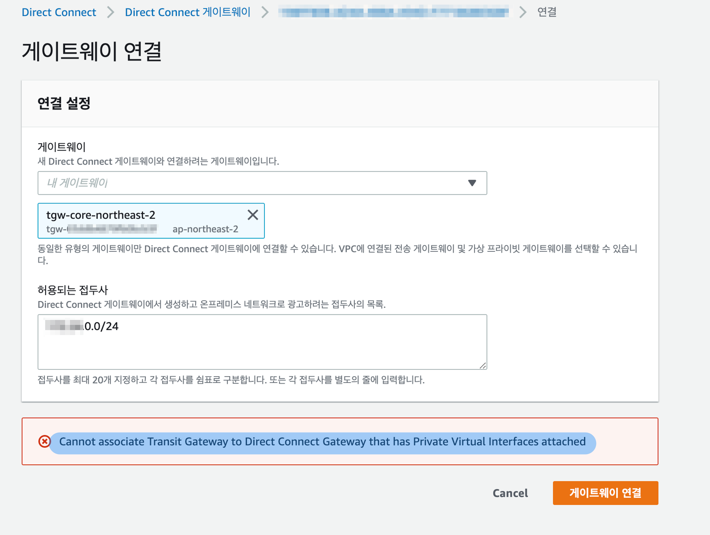
Cannot associate Transit Gateway to Direct Connect Gateway that has Private Virtual Interfaces attached
Virtual Interface의 잘못된 타입으로 인해 Direct Connect Gateway와 Transit Gateway를 연결하지 못하는 상황을 표현한 구성도입니다.
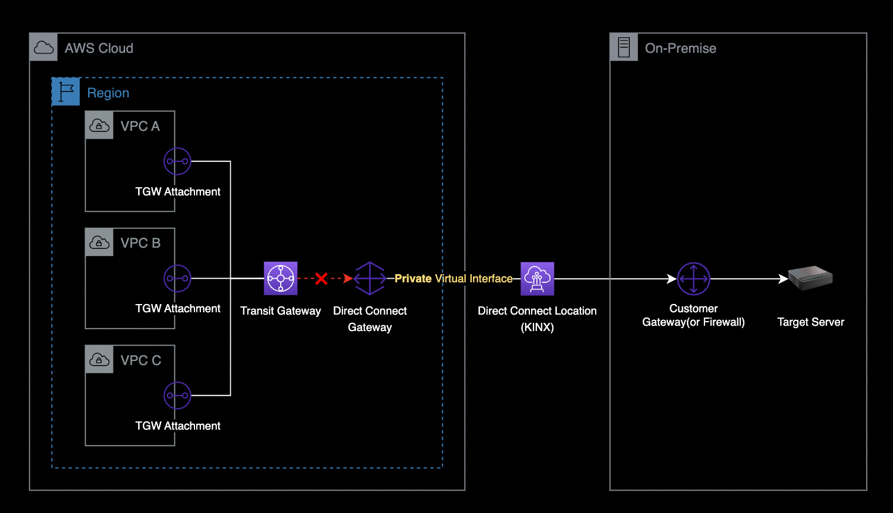
이 경우, 다음 순서대로 Virtual Interface 오류를 조치합니다.
- 기존에 생성한 Private 타입의 Virtual Interface를 삭제
- Virtual Interface를 생성합니다. 이 때 반드시 Transit 타입으로 생성합니다.
- 자세한 Transit VIF 생성 방법은 AWS 공식문서를 참조합니다.
- Transit Virtual Interface를 다시 활성화하기 위해 BGP Config 파일을 다운로드 받기
- AWS 콘솔 → Direct Connect → Virtual interfaces → VIF 클릭 → Actions → Download → Sample configuration
- 다운로드 받은 새로운 BGP 설정 파일을 메일 또는 지정된 수단을 사용해 DX Location 네트워크 담당자에게 전달합니다.
- BGP 구성 작업이 끝나면 Transit Virtual Interface가
available상태로 변합니다.
Transit Gateway
Transit Gateway는 AWS의 네트워크 중앙 허브입니다.
다음과 같은 연결이 필요한 경우 Transit Gateway를 사용합니다.
- VPC와 VPC간의 연결
- VPC와 온프레미스 데이터세터 연결이 필요한 경우 중간다리 역할
- VPC - Transit Gateway - DX 구성
- VPC - Transit Gateway - Customer Gateway 구성 (Site to Site VPN)
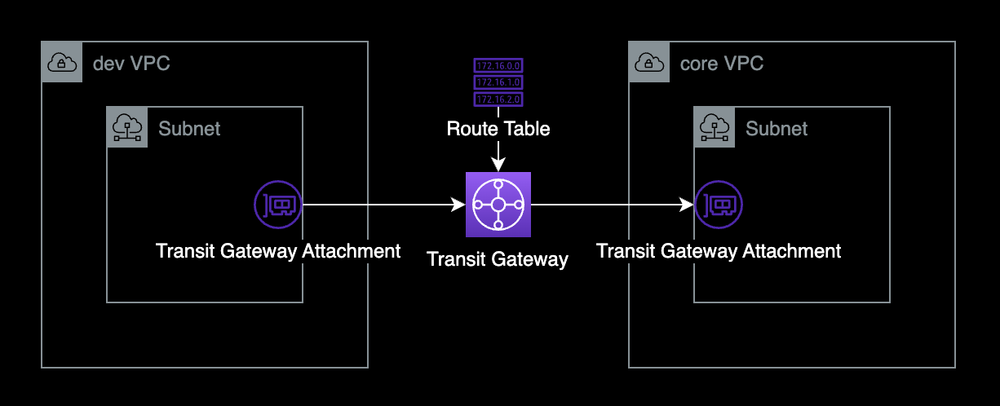
VPC와 VPC를 연결하면 Transit Gateway Attachment(ENI)가 지정된 서브넷에 생성됩니다. 이를 통해 Transit Gateway로 트래픽을 송수신합니다.
Transit Gateway 구축 시에는 AWS 공식문서의 Transit Gateway 설계 모범 사례를 준수해서 만들기를 권장합니다.
Transit Gateway에 라우팅 룰은 크게 2가지로 구분됩니다.
- Static : 관리자가 직접 Destination IP 대역과 라우팅 방향을 지정한 룰
- Propagated : Propagation을 등록하면 해당 VPC 대역이 Transit Gateway 라우팅 테이블에 자동으로 추가됩니다. 이 때, 자동 추가된 라우팅 룰의 타입은 Propagated 입니다.
VPC Endpoint 통합
여러 개의 VPC 환경에서 S3, KMS, SNS 등의 엔드포인트를 하나의 계정에서 통합관리 하기
VPC Endpoint는 크게 2가지 타입으로 구분됩니다.
- Interface Endpoint
- Gateway Endpoint
Interface Endpoint를 사용하면 여러 개의 VPC의 Private Subnet에서 공통으로 사용하는 서비스 S3, KMS, ECR 등의 엔드포인트를 통합 관리할 수 있습니다.
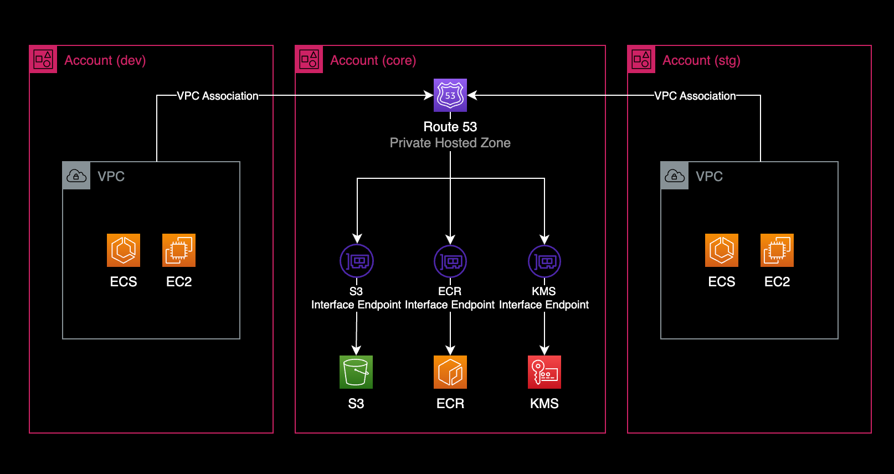
생성절차는 다음과 같습니다.
- VPC Endpoint 생성
- VPC Endpoint의 타입은 Interface 타입으로 생성합니다.
- VPC Endpoint에서 Private DNS names enabled 비활성화
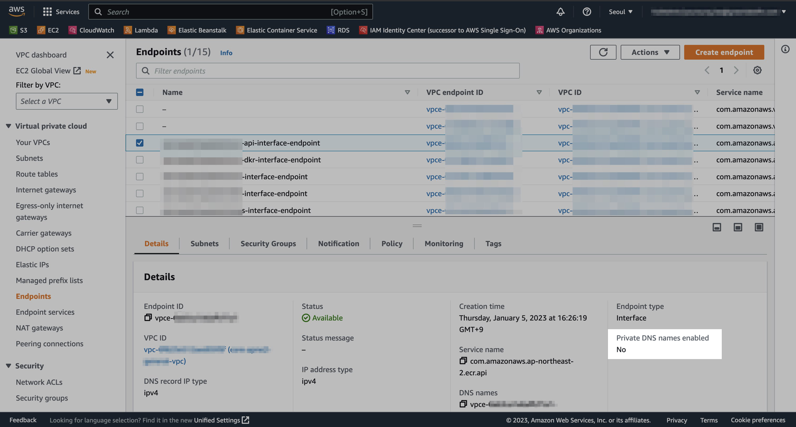
- Route 53에서 Private hosted zone 생성
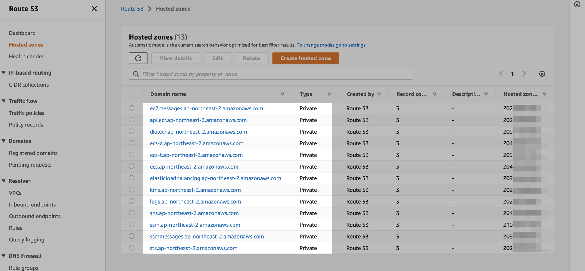
- 각 Private hosted zone마다 A 레코드로 VPC 엔드포인트를 추가합니다.
참고자료
AWS VPC PrivateLink를 이용한 네트워크 구성 전략(박병진) - 당근 SRE 밋업 1회
Route 53 Inbound Resolver
온프레미스 데이터센터에서 AWS Private DNS 사용하고 싶을 경우 Route 53 Inbound Resolver를 생성하면 됩니다.
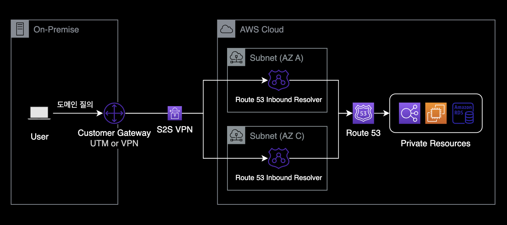
- Route 53 Inbound Resolver를 생성하면 각 서브넷마다 ENI 형태로 생성됩니다.
- Inbound Resolver의 IP는 Private IP이기 때문에 외부에서 Inbound Resolver를 통해 AWS 내부로 질의하기 위해서는 VPN 또는 Direct Connect 등으로 연결되어 있어야 합니다.
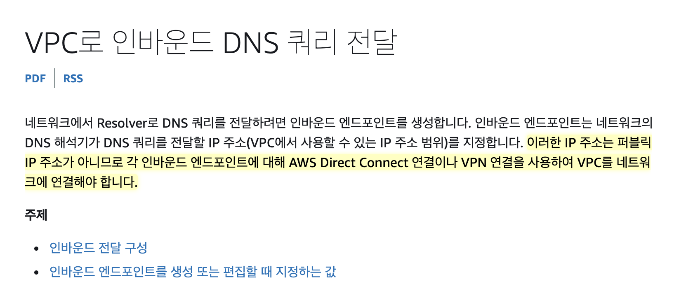
- 두 개 이상의 서로 다른 가용 영역에 Route 53 Inbound Resolver를 생성하는 게 모범 사례입니다.
- Route 53 Inbound Resolver는 최소 2개 ~ 최대 6개까지 동시 사용이 가능합니다.
- 아쉽게도 1개만 생성 못하고 최소 2개를 사용해야 합니다.
- Route 53 Inbound Resolver의 비용
- 엔드포인트 ENI 1개마다 비용이 0.125/1h USD 발생합니다.
- Route 53 Resolver 엔드포인트 비용
SSM Session Manager
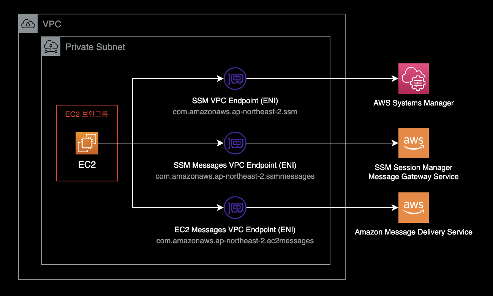
Private Subnet에 위치한 EC2 인스턴스에 SSM Sessions Manager를 접속하기 위해서는 3개의 VPC Endpoint 등록이 필요합니다.
1 | Interface Type | com.amazonaws.REGION.ssmmessages
2 | Interface Type | com.amazonaws.REGION.ec2messages
3 | Interface Type | com.amazonaws.REGION.ssm
SSM Session Manager용 VPC Endpoint를 구성할 때에는 아래 문서들을 참고하면 좋습니다.
Systems Manager를 사용하여 인터넷 액세스 없이 프라이빗 EC2 인스턴스를 관리할 수 있도록 VPC 엔드포인트를 생성하려면 어떻게 해야 합니까?
AWS Knowledge Center
Automated configuration of Session Manager without an internet gateway
AWS Blog
Step 5: Create VPC endpoints
SSM Session Manager에 필요한 VPC Endpoint 생성 가이드
SSM Session Manager 중앙집중식 로깅
서버 원격관리 방식으로 SSM Session Manager를 사용하는 경우 중앙집중식으로 SSM 로깅을 할 수 있습니다.
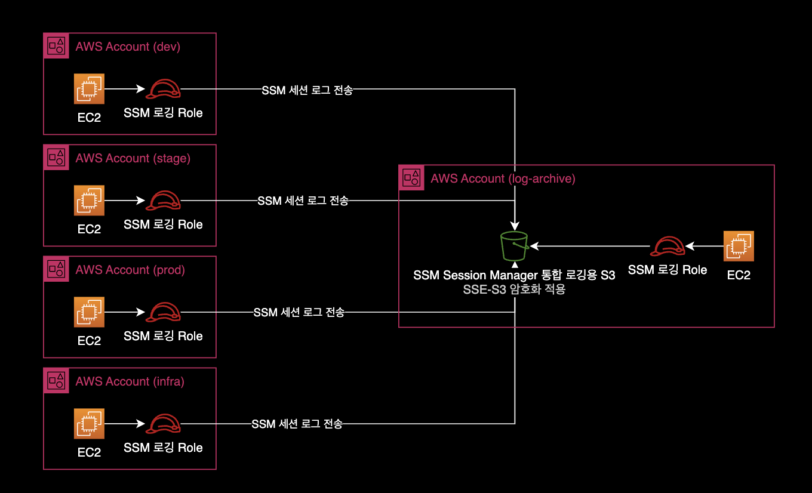
여러 AWS 계정의 SSM 로그를 지정된 하나의 AWS 계정으로 모으면 다음과 같은 장점이 있습니다.
- 간결한 시스템 아키텍쳐 : 인프라 유지보수가 더 수월해집니다.
- 로그 접근성 향상 : 하나의 버킷에서 전체 AWS 계정의 로그를 한 눈에 볼 수 있어서 운영이 편리하고 접근성이 더 좋아집니다.
S3 버킷에 저장된 SSM Session Manager 로그에는 아래와 같이 접속 시간, 실행한 명령어와 결과가 저장됩니다.
Script started on 2023-01-19 07:10:08+0000
[?1034hsh-4.2$
[Ksh-4.2$
sh-4.2$ uptime
07:09:57 up 39 min, 0 users, load average: 0.00, 0.00, 0.00
sh-4.2$ exit
exit
Script done on 2023-01-19 07:10:08+0000
중앙 로깅용 S3 버킷 정책Bucket Policy의 예시는 다음과 같습니다.
{
"Version": "2012-10-17",
"Statement": [
{
"Sid": "AllowLoggingSSMFromCrossAccountInstances",
"Effect": "Allow",
"Principal": {
"AWS": "*"
},
"Action": [
"s3:PutObjectAcl",
"s3:PutObject",
"s3:GetEncryptionConfiguration"
],
"Resource": [
"arn:aws:s3:::<YOUR_SSM_LOGGING_BUCKET_NAME>",
"arn:aws:s3:::<YOUR_SSM_LOGGING_BUCKET_NAME>/*"
],
"Condition": {
"StringEquals": {
"aws:PrincipalOrgID": "<YOUR_AWS_ORGANIZATION_ID>"
}
}
},
{
"Sid": "DenyDeleteBucketFromAnyone",
"Effect": "Deny",
"Principal": {
"AWS": "*"
},
"Action": "s3:DeleteBucket",
"Resource": "arn:aws:s3:::<YOUR-SSM-LOGGING-BUCKET-NAME>"
}
]
}
하나의 ALB에서 여러 도메인 라우팅
HTTPS Listener Rule을 사용하면 동일한 로드 밸런서에서 여러 도메인에 따라 백엔드 서버를 다르게 보낼 수 있습니다.
도메인을 구분하는 방법은 Listener Rule의 조건문에서 Host Header를 사용하면 됩니다.
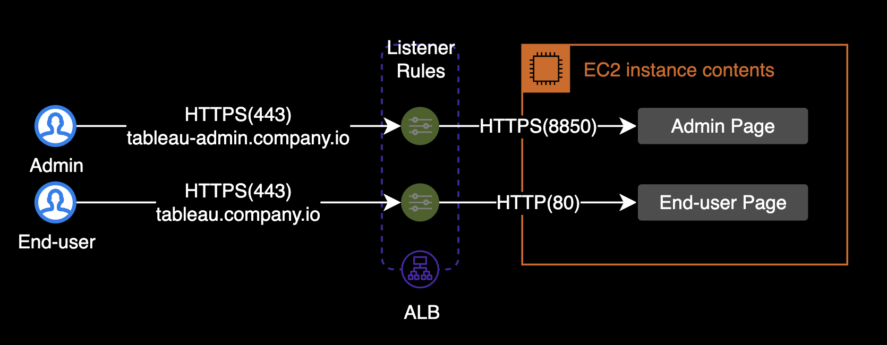
Application Load Balancer를 사용하여 호스트 기반 라우팅을 설정하려면 어떻게 해야 합니까?
AWS 공식 가이드
QueryPie
QueryPie Proxy 기능을 활용하여 EC2 인스턴스가 DB에 직접 접근하지 않고, QueryPie를 통해 경유해 접속하도록 안전한 DB 접속 경로를 제공합니다.
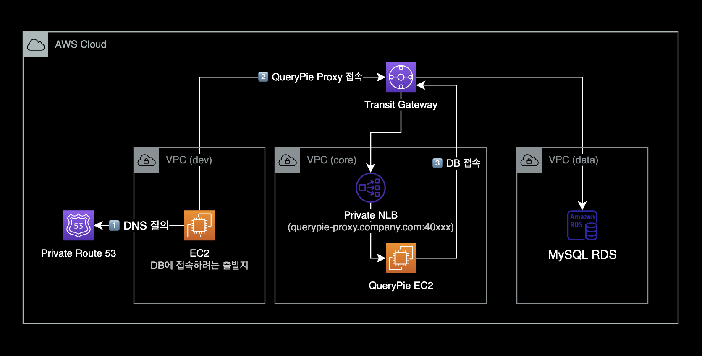
Central Egress
Centralized egress to internet
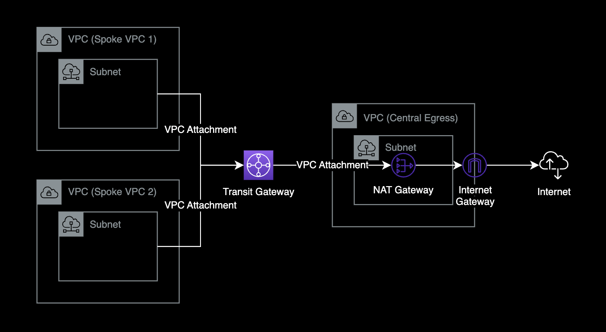
- 네트워크 중앙 허브 역할을 하는 Transit Gateway 리소스를 사용하여 여러 개의 VPC를 연결합니다.
- Central Egress로 구성하게 되면 하나의 VPC에서만 NAT Gateway를 운영하므로 비용 절감 가능.
- 각각의 VPC마다 NAT Gateway를 만드는 경우 시간당 Endpoint 비용이 청구되므로 비용이 많이 나감.
- 아웃바운드로 나가는 경로가 하나로 통합되어 인터넷 아웃바운드 트래픽에 대한 로깅 및 감사 편리